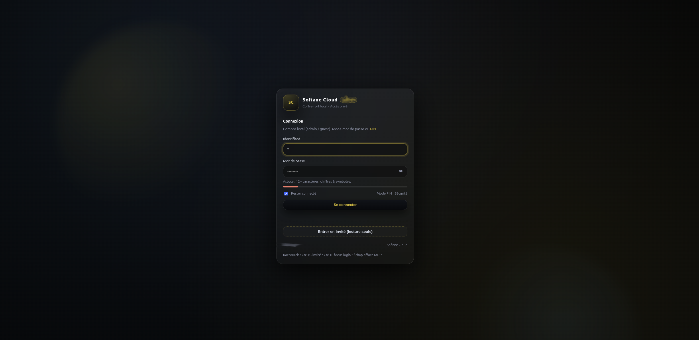
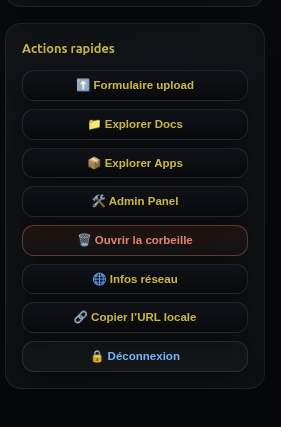
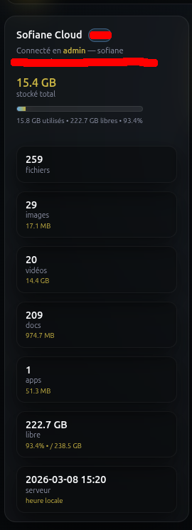
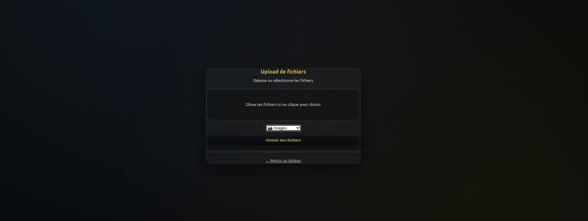
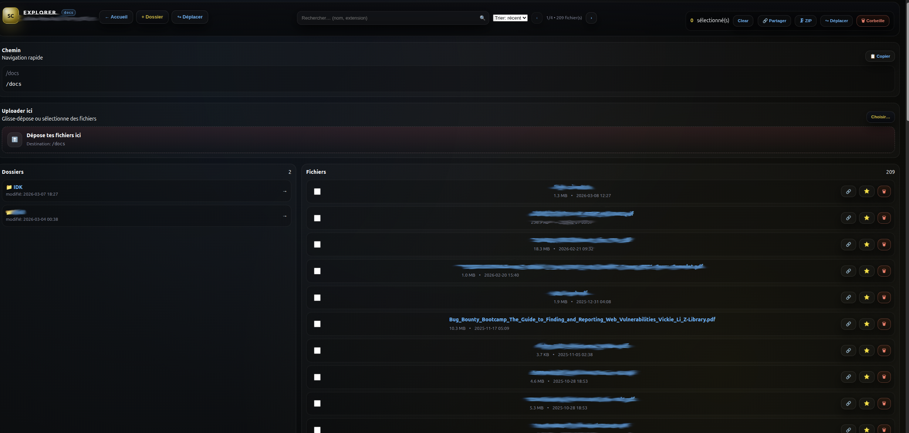
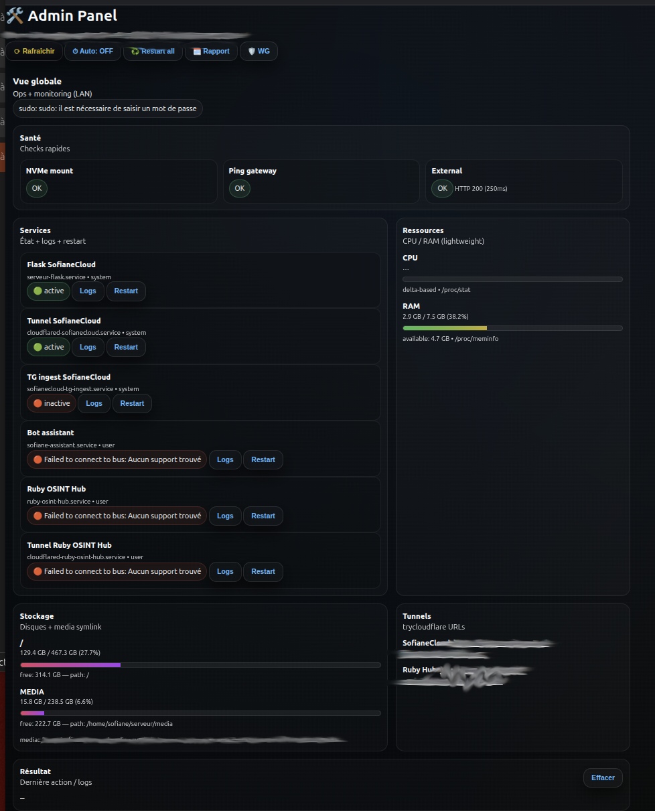

Objectif
Centraliser photos/vidéos/docs sur une machine locale, avec une interface rapide sur mobile, et des outils d’admin (monitoring + actions) pour l’exploitation.
Fonctionnalités clés
- Home dark premium : navigation par onglets (Images / Vidéos / Docs / Apps / Notes).
- Explorer Docs/Apps : responsive + recherche + pagination + multi-sélection + actions bulk (ZIP, move, trash, share).
- Galerie : modal preview avec navigation clavier + actions (download / copy link).
- Corbeille : UI avancée (recherche, tri, pagination, bulk restore/delete).
- Admin Ops Panel : état services/tunnels + actions systemd (sudo -n), ressources (CPU/RAM) lightweight.
Captures
Aperçu des écrans principaux.

Page de login
Aperçu du site

Onglet actions rapides

Onglet info

Formulaire upload

Explorer documents

Panneau admin
Notes
- Projet destiné à un environnement privé (LAN / tunnel). Liens publics variables si QuickTunnel.
- Focus : UX + fiabilité ops (redémarrages, logs, health checks).